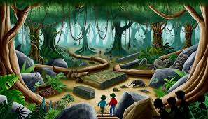

Um dia desses, assistindo passou na TV “Em busca do ouro perdido” e eu descobri um mapa antigo onde poderia estar o ouro perdido. Nesse mapa, o autor deixa os nomes de duas cidades que podem estar escondido o ouro, deixa algumas pistas para encontrar esse ouro e decidi segui-las!
Você começa sua jornada entre Minas Gerais. Ao amanhecer para encontrar a primeira pista do ouro perdido.
No amazonas, você entra em uma mata muito estranha. Na mata, você encontra uma plaquinha indicando o ouro perdido você deverá procurar a próxima pista em um ponto turísticos da cidade. Por qual você começa?
Na procura pelo ouro, você encontrará várias dificuldades e desafios. Vamos nessa...
Poxaaa você desistiu do “ouro” que pena. Mas se quiser um dia tentar acha-lo, é só você seguir o mapa. Boa Sorte!
No Teatro Amazonas, você descobre um mapa desenhado em um quadro na parede, apontando que a próxima pista está em Minas Gerais.
Explorando o museu do Amazonas-MUSA, você não encontra nada sobre o ouro perdido.
Na procura pelo "ouro perdido", você está todo animado, mas no caminho se depara com uma placa escrito “qual lado voce escolhe ir.
Ao voltar, você finalmente encontra o mapa falando em que cidade está escondido o “ouro”. indicando que está escondido em Minas Gerais.
O caminho à esquerda leva você a um mapa escondido com dicas duvidosas que revelam o tal esconderijo do "ouro perdido".
O caminho à direita te leva em uma área com muitos matos que é muito perigosa. Apesar de ser um caminho que chegará mais rápido no ouro, não há chances de conseguir passar por aqui.
Dentro da mata de Minas Geais, você consegue encontrar um lugar encantador e deslumbrante. um lugar onde tudo brilha e é chamado de “ouro perdido”. Viu valeu a pena a sua jornada ate aqui.
Retornando e escolhendo o caminho da esquerda, você finalmente encontra um outro mapa escondido que estará te levando ao ouro perdido.